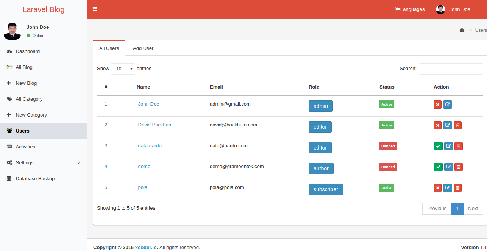
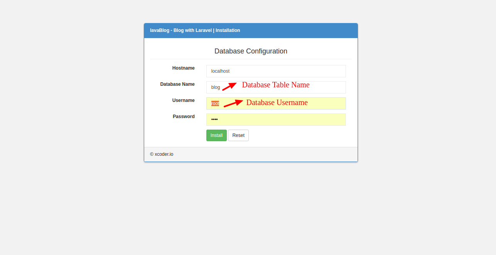
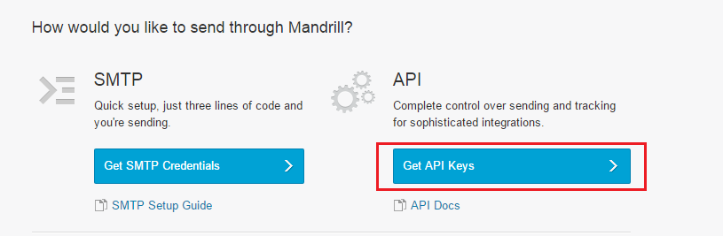

laraBlog V 1.1
laraBlog-Blog with Laravel
| Support : | xcoderdotio@gmail.com |
| Developer : | xCoder.io |
Thank you for your Buying Lara Blog.
Please read carefully the complete documentation before starting.
Key Features:
- Secure Blogging System
- Manage Author, Editor, Subscriber easily
- Dynamically changeable every Information
- Search System
- Two Logo types (Image & Text)
- 404, Search and Archive pages
- 2 Sidebars (Right Sidebar + Footer )
- Awesome Slider
- Beautiful Dashboard.
- Awesome Feature Post Option
- Blog posts with 4 layouts (Slider, Feature, Classic, others) Ajax module pagination
- World most popular Disqus comment (with Disqus API) support
- SEO friendly HTML5 Mark-up
- Responsive Design
- Four Types users who will be able to manage and Create Blog.
- Login with Facebook.
- Login With Google Plus.
- Login With Twitter.
- Login With Linkin.
- Login With Github.
- Mobile compatible.
- Multi language support.
- Beautiful track log system.
- Php / SMTP Mail support.


What's New in Version 1.1:
Application give some advances to upload Blog with youtube link and image import, Media, page, update user password and Advertisement.
Upload Blog
- User Can set / remove Media Image by Import from Media Menu.
- Media Image can be multiple using facility.
- Youtube link add system facility.
- All image comes from Media Menu.
Media
- User can Add image, update and delete image in dashboard view only.
- This Media image can be use multiple purpose. Such as Blog Image, Page image etc.
- Media image consume your time and Nice dashboard.
Page
- User can Page dynamically.
- Page can be designed by user own changes with nice looking facility.
- Page also can add image from Media Image menu.
Category based Advertisement
- Every category has own category based advertisemend facility.
- Every Category has two advertisement, One is Sidebar another Category bottom.
- Easy system, just copy your js ad code and paste it in your desired category.
User's password upgrade
- Admin user can be update his and other password update.
- Go to user's menu. and click edit button. you can update all your information.
- if you don't want to update your password just skip, previous password remain.
Upgrade:
Please fellow the instruction to upgrade..
- Take all social credentials backup (copy to a safe place) to resue next.
- Drop your existing tables (Mind it: you will loose all your data) from Database
If you want your existing data of your databaes please follow Method 2. - Delete existings codes & replace with new code.
- Fellow next
Installation
Installation Process
- Creating a new database into your server
- Unzip the downloaded folder
- Copy the files inside the zip folder : laraBlog into your server
- The auto web installer will start
- Follow on-screen instructions to finish the installation.
- Enter your database settings
- Press the "Install" button.
- That's it!
Creating a new database
Before Install you have to get ready your database first. Firstly, You have to create a new database before installing laraBlog - Blog with Laravel in your mysql server. If you already know how to do this/or have already created one just skip to the next step. Your host will most likely be running phpMyAdmin as mysql manager, if that's the case here's a step by step guide (if not the proccess will be very similar on other managers). Login to your control panel, find and click phpMyAdmin link: Click on the database tab in the top menu, enter any name you like and click create
Uploading Files
After creating a database, unzpip the .zip file you donwloaded from CodeCanyon and upload the contents of laraBlog - Blog with Laravel folder to your servers root folder (usually called www or html or something similar) or a sub-directory, shared hosting providers usually have a web based file manager, but you should use something like Filezilla to do the upload as the web based managers can cause various problems fairly often. Make sure that application/storage and all the sub-folders are writable by your server (have 777 permissions if you are on shared hosting). You can change files and folders permissions by right-clicking them in the filemanager, clicking file permissions, and then entering 777 in the permissions field.
Installing laraBlog - Blog with Laravel
After uploading 'laraBlog - Blog with Laravel' files, simply open your site url and follow on-screen instructions to finish the installation. You just Click Next Button. At last click Install button. thats it !
Blogging System
Blogging Process
- Creating a new Blog
- Follow on-screen instructions to create the blog.
- Firstly Give Blog Title
- Insert Blog Feature Image
- Select Blog Category
- Select Blog Position, its for Editor and Admin
- Enter your Blog Text
- Press the "Submit" Button.
- That's All!
Creating a new Blog
Managing Blog
After creating a Blog, you can also manage them. Edit and Delete also Change its position and Category.
Blog Category
Blogging Category Process
- Creating a new Category
- Follow on-screen instructions to create the blog Category.
- Give Blog Category Name
- Press the "Submit" Button.
- That's it!
Creating a new Category
Managing Category
After creating a Blog Category, you can also manage them. Edit and Delete the cateogory.
Category Based Advertisement
Category Based Advertisement Code Adding system
- Every category show different advertisement
- When Create a new Category
- When Update a Category
- Follow on-screen instructions to create the blog Category.
- Category Page right side advertisement code
- Category Page bottom advertisement code
- Press the "Submit" Button.
- That's it!
Media Upload and use
Media Upload and using system
- Go to Media Menu by clicking Media menu.
- Create new Media, Click Create Media Tab. it will expand with Title and Media file.
- Type someting in Title box to name your media, its mandatory.
- Click Media to upload a image.
- Press the "Submit" Button.
- That's it!
All Media Area to controll it over edit and delete option.
Basic Settings
Basic Setting Process
- Change Basic Setting. Please Click Dashboard Settings and Select Basic Setting link and Change the Your site Basic Information.
- You can change your site Logo, Site Name, Tag Name, About, Services, Contact, Follow link, Copyright And Disqus Commenting Information.
- It has Deafult Values.
- Edit and Change with your Site Information
- Click the "Submit" button.
- That's it!
Changing Basic Settings
User Management
User Role Manage Process
- There are Four Types Role of User. Administrator, Editor, Author and Subscriber.
- Administrator will be fully controll the Dashboard panel.
- Editor will be able to edit/delete the blog and can be set the blog position.
- Author will be able to create the blog only.
- Subscriber only can View the Dashboard. Administrator can be upgrade the role.
- Creating a new User
- Follow on-screen instructions to create a new user with its Role.
- Press the "Submit" button.
- That's it!
Creating a new User
Firstly, You have to click User Menu from leftside of the menu list. then click Add menu. Give User Full name, Email Address, Login Password (minimum 6 digit) and Select User Role.
Role User
After creating a user panel. You can Change/Upgrade User Role, Also can Ban Any user.
Add Disqus Information
Add Your Domain Disqus
- Create a Disqus. Please Click the link and Create it after login.
- If you create it, then go to your site Dashboard.
- Click Dashboard Settings Menu, it will Expand with few sub-menu. Click Basic Setting and select Disqus.
- It has Deafult Values.
- Edit and Change with your Disqus URL Name
- Click the "Update" button.
- That's it!
Creating Disqus Information
Take Disqus URL From Disqus Universal Area
Add Page and Updating it.
Add Page
- Creating a new page
- Click Dashboard Page Menu
- Select Add New page
- Give a Page Name, its mandatory
- Import a Page Image from Media Table, its optional
- Give Page Content.
- Press the "Submit" button.
- That's it!
Creating a page
Page Controll area.
Advertisement Setting .
Adsense or other advertisement setting
- Setting a advertisement
- Click Dashboard Advertisement Menu
- Their are Banner, Sidebar and Single Page Advertisement settings
- Give a add js full code, its mandatory
- Press the "Submit" button.
- That's it!
Setting a advertisement
Category Based Advertisement area.
In order to make mail work (for password reset and other functions), you will need to register for a mandrill API key. Mandrill is used to avoid the many problems that occur when using public smtp servers (like gmail or your hostings private one). Here's how to get your API key.
If you want to use SMTP instead (or one of the other available options), go to admin area > settings > mail and simply change mandrill to another option and enter any other required details like host, usernamer, password etc.
Register for mandrill api key
To register for mandrill key go to this url, create a new account and then log in. Then click get api keys -> +add api key

Then simply copy mandrill api key and enter it into corresponding field in admin area > settings > mail
All Activities
The tab Activities You can view all user Activities . It's also help you to view individual user log in and log out. You will can restrict user activities, manage their info update and create user. It will be able to full controll over your user actions.

Database Backup
You can easily take backup of your database by simply clicking on the menu tab Database Backup. Everything in your database will get in the database that will be exported as a zip file in your local directory.
Source Code Structure
- Build up on powerful Laravel php framework.
- For more info on Laravel , go to : https://laravel.com/docs/5.2 /
- Follows MVC model.
Included Files:
- Controller path : application/app/Http/Controllers
- Login & Register controller : application/app/Http/Controllers/Auth
- Models Path: application/app/Models/
- Configuration files : application/config and .env
- Template css files : css/
- Template font files : fonts/
- Template js files : js
- Template image files : img/
- images uploaded in : uploads/
Customer Support
xCoder.io is always ready to serve its valued clients.
For any kind of after sales support or customization - Don't hesitate to contact us at:
E-Mail: xcoderdotio@gmail.com

Social Login
In order to make social login (logging in via google, twitter and facebook) work you will need to register for a corresponding app and get that services Client ID and Client Secret. Check out the section for each service for a detailed instruction for how to register and get those tokens. Once you've got your client id and secret simply enter them in corresponding field in admin area -> third party services and keys.
Facebook
You can resgister for a facebook app Here by clicking on My Apps > add a new app at the top. Once you create the app you can find your id and secret in your app dashboard, you will also need to enter your site url in Settings > site url field and make your app public from Staus & Review tab.
Twitter
You can register for a twitter app Here, after you register you will need to enter your site url in Website and Callback Url fields in your app settings, you can find your key and secret in the Keys & Access Tokens tab.
Set callback url
Get client ID and Client Secret
Google
You can register for a google app Here by clicking on Create new project, after creating new project go to credentials tab and in the authorized redirect uri field enter http://yoursiteurl.com/auth/social/google/login, you might also need to enable Google plus and contacts APIs.
Github
You can register for a github app Here by clicking on Create new project, after creating new project go to credentials tab and in the authorized redirect uri field enter http://yoursiteurl.com/github/callback
Linked In
You can register for a github app Here by clicking on Create Application, after creating new Application with valid data. Hit submit and on next page you have to put your authorized redirect uri field enter http://yoursiteurl.com/linkedin/callback